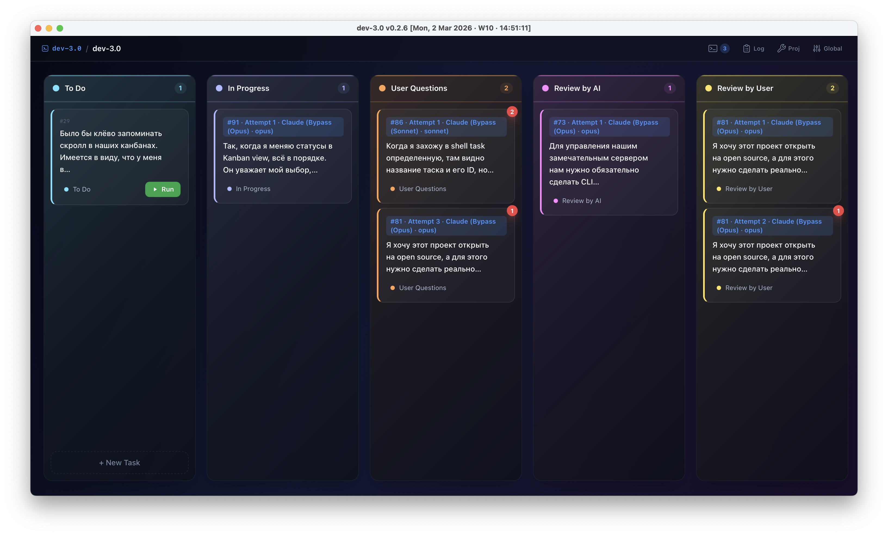

One app to manage
all your AI agents
Terminal-centric project manager where each task gets its own git worktree, tmux session, and full terminal — all orchestrated from a Kanban board.

dev-3.0

screenshots/kanban-board.pngKanban board with tasks in multiple columns